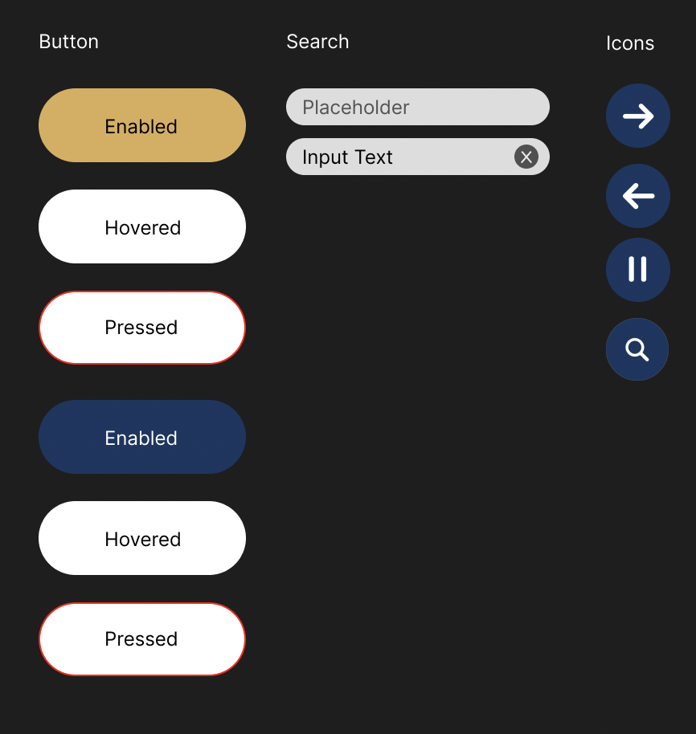
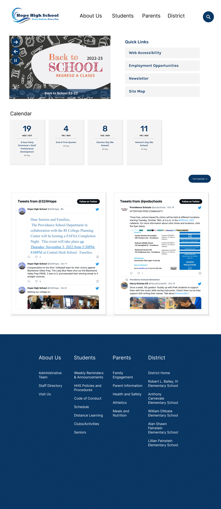
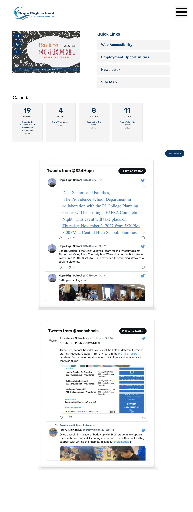
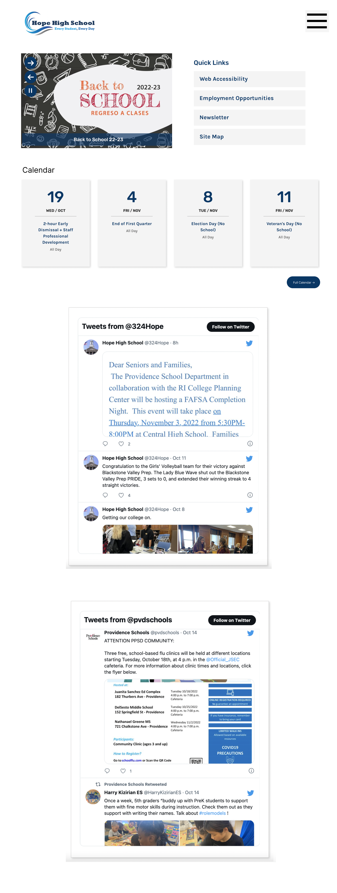

Hope High School
I decided to redesign the website for Hope High School in Providence, RI. I did so because I thought the layout could be restructured to present the information more clearly.
Problems
- The Quick Links section was at the bottom of the page, resulting in low efficiency for users who simply want to access the information provided by the Quick Links section.
- Information on the website was redundant; for example, the location of the High School was present on both the home page and the Site Map link in the Quick Links section.
- The grouping of links and information on the website was not intuitive; links were split up into many sections on the website, and it was unclear why certain items were grouped together, resulting in both low learnability and low memorability.
- The conceptual model did not seem effective in accomplishing its goals; both parents and students have difficulty accessing the locations they most likely will use the most often (the Skyward login portal for students, and the newsletter for parents.)
WebAIM Wave Scan
The WebAIM Wave scan showed few accessibility errors, which I generally agree with; most of the struggles in the website primarily stemmed from the placing of information.
Wireframe
Visual Style Guide

High Fidelity Prototyping
Desktop

Mobile

Tablet

Redesign
Link